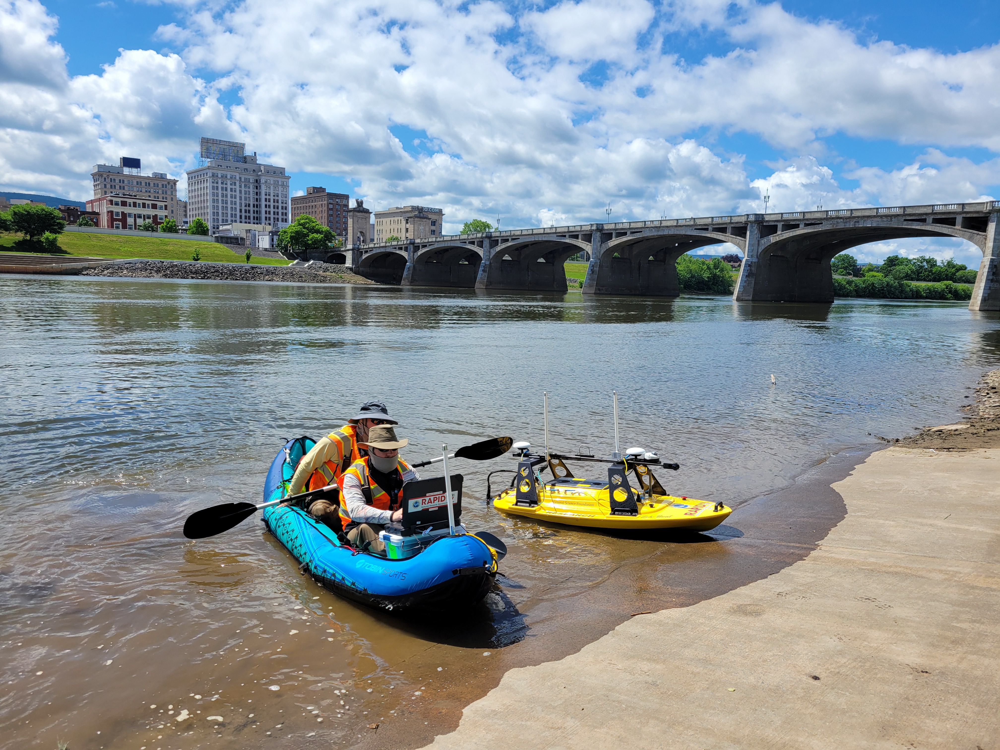

Geotechnical Subsurface Characterization (Graduate)
This course discusses common invasive subsurface geotechnical characterization techniques, geophysical testing methods, and how to use in-situ data for geotechnical design.
Civil engineers will have to tackle some of the biggest challenges our society will face in the coming years. We need to attract talented students to our profession and equip them with the necessary tools and motivation to tackle crumbling infrastructure, clean energy, depleted water supply, and increasingly severe natural and manmade hazards. Dr. Yost leverages her experience in research and practice to prepare courses that are interesting, challenging, and relevant. Students will leave her courses not only with a basic grasp of necessary tools in geotechnical engineering, but also with an idea of how to use those tools to solve big, impactful problems.

This course discusses common invasive subsurface geotechnical characterization techniques, geophysical testing methods, and how to use in-situ data for geotechnical design.
This course introduces geotechnical engineering and the properties of soil and their application to civil engineering design.
This course engages students in hands-on activities to explore the fundamental properties of various civil engineering materials, including soils, aggregates, concrete, steel, and wood.
This course covers design methods for foundations and earth structures, including site investigation, footings, piles, stability, settlement, and retaining structures.